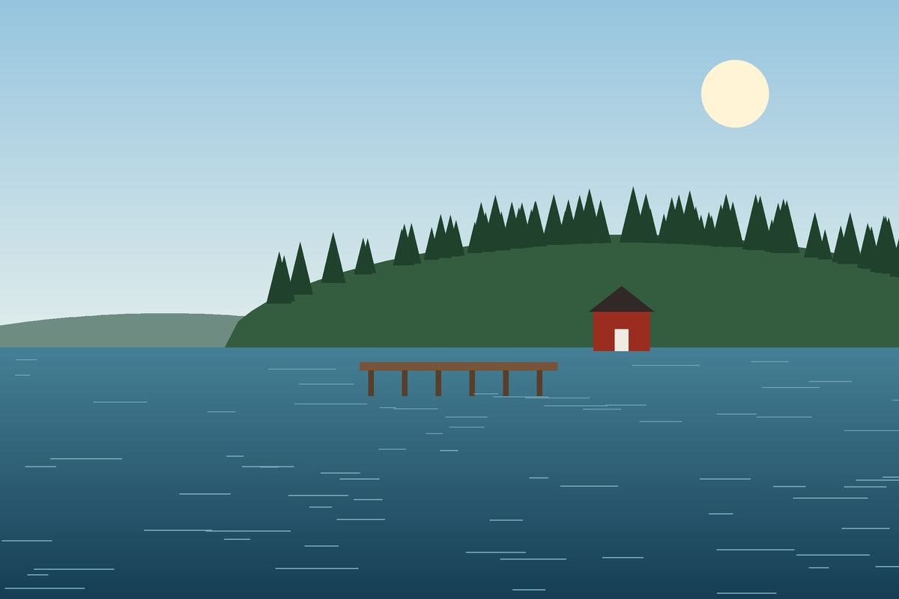
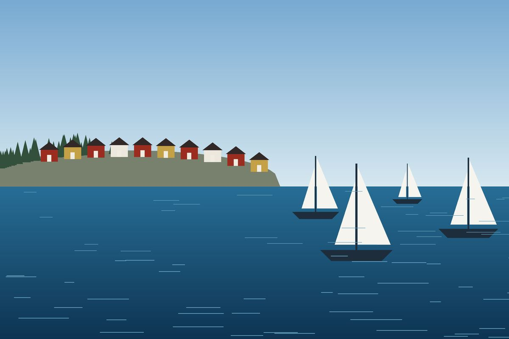
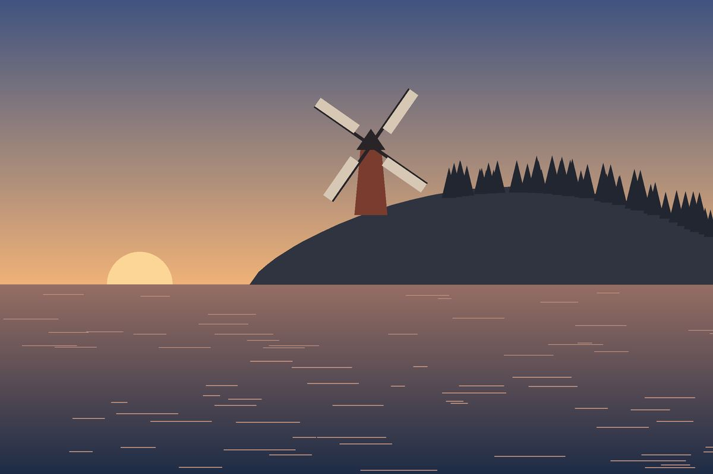

Grinda
Nära stan, mycket skog och klippor att bada från. Bra för en första tur.
Läs mer om Grinda
Du behöver ingen egen båt och ingen sommarstuga. En båtbiljett, en matsäck och en tidig morgon räcker långt.
Jag har valt tre öar som är lätta att ta sig till och som är ganska olika varandra. Börja med den som låter mest som du.

Nära stan, mycket skog och klippor att bada från. Bra för en första tur.
Läs mer om Grinda
Gamla gruvhål, en väderkvarn och cykelvägar. Ön för dig som vill röra på dig.
Läs mer om UtöSegelbåtar, sandstrand och mer folk än på de andra. Livligast på sommaren.
Läs mer om SandhamnBåtarna går tätare på sommaren än resten av året. Titta på sista båten hem innan du bestämmer dig, inte efter.
Det finns värdshus och kaféer på alla tre öarna, men de kan ha stängt utanför säsong. En macka i väskan har räddat mig flera gånger.
Båten väntar inte. Är du på plats tio minuter innan hinner du dessutom välja plats på soldäck.